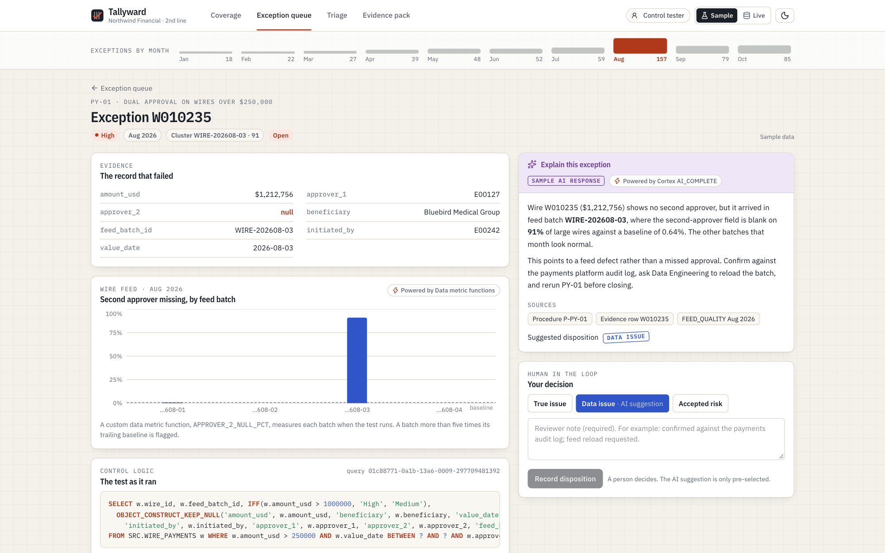
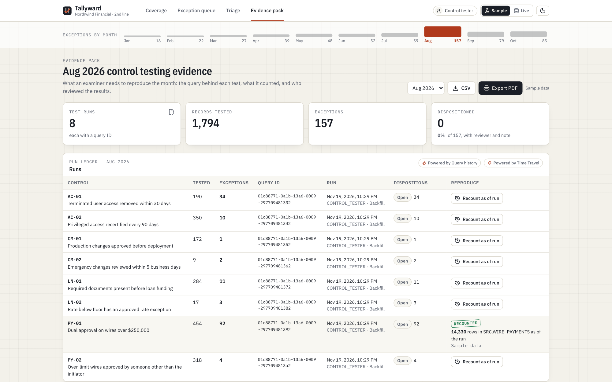

See the whole population
Eight controls test every record each month. The heatmap shows exceptions per control and month; the PY-01 dual-approval test jumps from 5 in July to 92 in August.
Snowflake TasksDynamic TablesData metric functions
Work the queue by root cause
Open exceptions are grouped by feed batch, system or document. A data metric function flags the August wire batch whose second-approver field arrived blank on 91% of large wires.
Data metric functions
Explain one exception
The evidence row, the per-batch feed quality chart and the control SQL sit next to an AI explanation that suggests "Data issue". The reviewer makes the call.
Cortex AI_COMPLETE
Triage the backlog with an agent
Each ticket is classified, compared for duplicates, then investigated by an agent that queries the exceptions, searches procedures, checks feed quality and drafts a route. Each step waits for Approve, Edit or Reject.
Cortex AI_CLASSIFYCortex AI_SIMILARITYCortex Agents
Hand the examiner a reproducible pack
Every run keeps its query ID, counts and reviewers. A Time Travel query recounts the source table as of the run. Export as CSV or PDF.
Time TravelQuery history